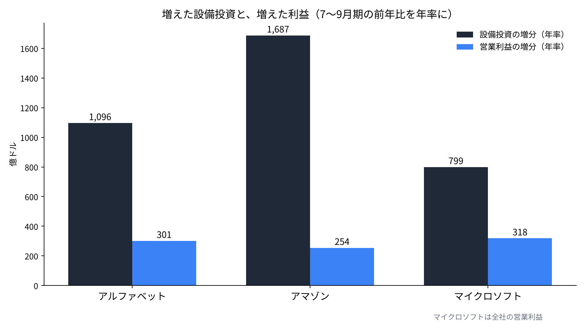
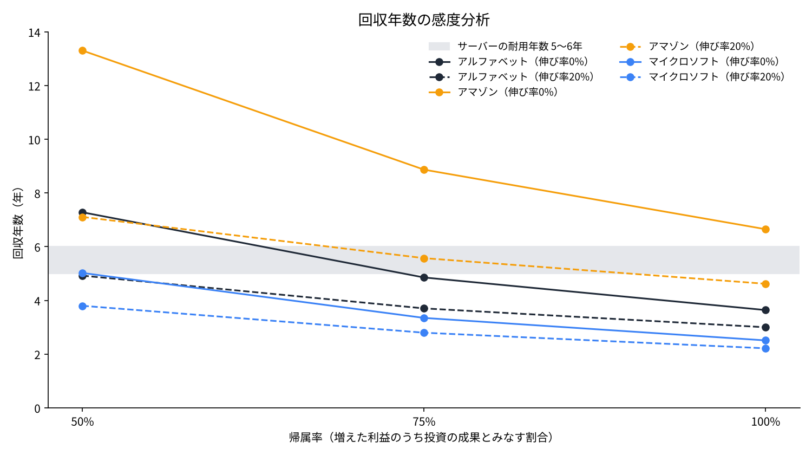

AIの設備投資は何年で回収できるのか――アルファベット・アマゾン・マイクロソフトの7〜9月期で試算する
2026年10月28〜29日（米国時間）、米国の大手3社が7〜9月期の決算を出した。3社がこの四半期に使った設備投資は合わせて約1,680億ドルで、1年前の約2.1倍になった。
本稿の問いは一つである。1年前より増えた設備投資は、1年前より増えた営業利益で、何年あれば回収できる計算になるのか。
3社の決算資料と会計方針の開示、国際エネルギー機関（IEA）の報告を使い、利益の帰属と伸び率を動かした感度分析で確かめる。

問いと背景
設備投資とは、土地・建物・サーバーなど、何年にもわたって使う資産を買うための支出である。会計では一度に費用にせず、使う年数（耐用年数）に分けて減価償却費として毎年の費用にする。回収期間とは、投資した額をその投資が生む利益で取り戻すまでの年数をいう。
アルファベットの7〜9月期の設備投資は513.6億ドルで、前年同期の239.5億ドルから2倍を超えた。営業キャッシュフローから設備投資を引いたフリーキャッシュフローは、この四半期で−90.7億ドルになった[1]。アマゾンの設備投資は772.6億ドルで、直近12か月のフリーキャッシュフローは−423.6億ドルである。同社は2026年の設備投資を約2,200億ドルと見込み、その増加は主にAIへの投資だと説明している[2]。
マイクロソフトの有形固定資産の取得は393.7億ドルで、前年同期の193.9億ドルから約2倍になった。クラウド基盤のAzureの売上は48％伸びている[3]。市場の反応は分かれ、アルファベットは決算翌日の29日に12.64％下げ、マイクロソフトは時間外で4％超上げた[7]。アマゾンは時間外で5％超下げている[8]。
回収の年数を考えるうえで欠かせないのが耐用年数である。アマゾンは2025年1月から、サーバーとネットワーク機器の一部の耐用年数を6年から5年に縮めた。理由は、AIと機械学習を中心に技術の進みが速いことである[4]。AIの計算に使う機械は、5〜6年で入れ替わる前提で費用にされている。

データと方法
使う数字は、3社の決算資料にある7〜9月期と前年同期の二つである[1][2][3]。設備投資には各社のキャッシュフロー計算書の「有形固定資産の取得」を使う。利益には、アルファベットはGoogle Cloud、アマゾンはAWSの部門営業利益を使う。
マイクロソフトは2027年度から部門の区分を組み替え、クラウドだけの営業利益を示していない。そこで全社の営業利益を使う。全社の利益にはクラウド以外の伸びも入るため、マイクロソフトの回収年数は短めに出る。この点は結果を読むときの前提として残す。
計算は次のとおりである。
年率の設備投資の増分 ΔC＝（今期の設備投資−前年同期の設備投資）×4
年率の利益の増分 ΔP＝（今期の営業利益−前年同期の営業利益）×4×帰属率s
回収年数は、1年目にΔP、2年目にΔP×（1＋g）と利益が伸びるとして、利益の合計がΔCに届くまでの年数である。端数は按分する。帰属率sは、増えた利益のうち増えた設備投資が生んだ割合、gは増えた利益の年間の伸び率である。基準はs＝100％、g＝0％とし、このとき回収年数はΔC÷ΔPになる。税金は考えない。
結果
| 会社 | 設備投資（前年→今期） | 部門営業利益（前年→今期） | ΔC（年率） | ΔP（年率） | 回収年数（基準） |
|---|---|---|---|---|---|
| アルファベット | 239.5→513.6億ドル | 35.9→111.2億ドル（Google Cloud） | 1,096億ドル | 301億ドル | 3.6年 |
| アマゾン | 351.0→772.6億ドル | 114.3→177.7億ドル（AWS） | 1,687億ドル | 254億ドル | 6.7年 |
| マイクロソフト | 193.9→393.7億ドル | 379.6→459.2億ドル（全社） | 799億ドル | 318億ドル | 2.5年 |
基準の前提では、アルファベットは3.6年、アマゾンは6.6年、マイクロソフトは2.5年で回収できる計算になった。アマゾンだけが、サーバーの耐用年数である5〜6年を超える。設備投資の増え方が最も大きく、AWSの利益の増え方がそれに追いついていないためである。

アルファベットは、Google Cloudの営業利益が1年で約3.1倍になった。売上も151.6億ドルから307.1億ドルへ2倍を超えている[1]。利益の増え方が設備投資の増え方に近いことが、3.6年という短さに出ている。
感度分析
基準の前提は、増えた利益をすべて増えた設備投資の成果とみなし、利益がこれ以上伸びないとするものである。そこで帰属率sを100％・75％・50％に、伸び率gを0％・20％・40％に動かした。
| 帰属率s | 伸び率g | アルファベット | アマゾン | マイクロソフト |
|---|---|---|---|---|
| 100％ | 0％ | 3.6年 | 6.7年 | 2.5年 |
| 100％ | 20％ | 3.0年 | 4.6年 | 2.2年 |
| 100％ | 40％ | 2.6年 | 3.8年 | 2.1年 |
| 75％ | 0％ | 4.9年 | 8.9年 | 3.3年 |
| 75％ | 20％ | 3.7年 | 5.6年 | 2.8年 |
| 75％ | 40％ | 3.2年 | 4.5年 | 2.5年 |
| 50％ | 0％ | 7.3年 | 13.3年 | 5.0年 |
| 50％ | 20％ | 4.9年 | 7.1年 | 3.8年 |
| 50％ | 40％ | 4.0年 | 5.4年 | 3.2年 |

マイクロソフトは、9通りのすべてで5年以内に収まった。アルファベットが6年を超えるのは、帰属率50％で利益が伸びない場合の7.3年だけである。アマゾンは、帰属率50％で伸びがないと13.3年かかる。帰属率75％でも、伸び率が20％なら5.6年、40％で4.5年になり、ようやく5年を下回る。
アマゾンの回収は、AWSの利益がこれから年2〜4割の速さで増え続けるかどうかにかかっている。アルファベットとマイクロソフトは、利益の伸びが止まっても、増えた利益の大半が投資の成果である限り、耐用年数の中で回収できる計算になる。
考察
反対の見方は二つある。一つ目は、この試算は回収を長く見積もりすぎているという見方である。設備投資には、土地や建物のように15〜25年使う資産も入っている。マイクロソフトは2027年度から、データセンターの建物の耐用年数を15年から25年に延ばしたと報じられた[6]。建てたばかりの設備はまだ利益を生んでおらず、利益が出るのはこれからでもある。アルファベットのクラウドの受注残は、6月末で5,139億ドルあったと報じられている[9]。
二つ目は、逆に短く見積もりすぎているという見方である。増えた利益には、AIと関係のない需要の伸びも入っている。さらに、今期の大きな設備投資の減価償却はまだ十分に費用に乗っていない。アルファベットの減価償却費は56.1億ドルから83.7億ドルへ49％増えたが、設備投資の増え方は114％だった[1]。この差は、これからの営業利益を押し下げる方向に働く。
電気の制約もある。IEAは、世界のデータセンターの電力消費が2030年に約945テラワット時へ、ほぼ倍に増えると見ている[5]。サーバーを買っても、動かす電気と場所がなければ利益は生まれない。電力の手当てが遅れれば、回収はその分だけ遅れる。
データの限界も大きい。部門営業利益はAIだけの利益ではない。マイクロソフトは全社の利益で代用した。四半期を4倍にした年率は、季節の動きを含む。マイクロソフトはデータセンターのリースを、設備投資に数えるファイナンス・リースから数えないオペレーティング・リースへ移すと説明したと報じられており、公表される設備投資の額そのものが小さく出る可能性がある[6]。
答え合わせの基準は、次の2〜4四半期の数字である。アマゾンでは、AWSの営業利益の前年からの増分を、設備投資の前年からの増分で割った比率を見る。今期は約0.15で、これが0.2を超えれば基準の回収年数は5年を切る。アルファベットでは、減価償却費の伸びがGoogle Cloudの利益の伸びを上回り始めたら、結論を見直す。
結論
7〜9月期の数字で試算すると、増えた設備投資の回収年数は、アルファベットが3.6年、アマゾンが6.6年、マイクロソフトが2.5年になった。マイクロソフトの数字は全社の利益を使ったため、甘めに出ている。アルファベットとマイクロソフトは前提を厳しくしても多くがサーバーの耐用年数に収まる。アマゾンは、AWSの利益が年2割以上伸び続けることが回収の条件になる。
29日の株価は、この順位とは一致しなかった。回収年数の短いアルファベットが12.64％下げた。市場が見たのは回収の年数より、フリーキャッシュフローがマイナスになったことだったのではないだろうか。
僕はこう見ている
僕はアルファベットを350株持っている。12%安の翌朝も、売りも買い増しもしていない。今週は決算を見て買い増さないと決めていたからだ。口座の現金は0.76%しかなく、今は現金余力を貯める時間だと考えている。アマゾンは持っていない。いい会社だと思うが、AIを作る側ではなく使う側だと見ているからだ。
半導体の会社も持っていない。チップは余っていて、チップを動かすのは電気だと考えている。だから外国株では、電気と場所まで一緒に出せる側としてSpaceXを1,250株持っている。IEAの見通しのとおり電気が足りなくなるなら、回収の速さを決めるのは、どれだけ買ったかより、どれだけ動かせたかになるのかもしれない。
出典
- Alphabet Inc.「Alphabet Announces Third Quarter 2026 Results」2026年10月28日 https://s206.q4cdn.com/479360582/files/doc_financials/2026/q3/2026q3-alphabet-earnings-release.pdf
- Amazon.com, Inc.「Amazon.com Announces Third Quarter Results」2026年10月29日 https://s2.q4cdn.com/299287126/files/doc_earnings/2026/q3/earnings-result/AMZN-Q3-2026-Earnings-Release.pdf
- Microsoft Corporation「FY27 Q1 Earnings Release」2026年10月29日 https://www.microsoft.com/en-us/investor/earnings/fy-2027-q1/press-release-webcast
- Amazon.com, Inc.「Form 10-K（2024年12月期）」2025年2月 https://www.sec.gov/Archives/edgar/data/1018724/000101872425000004/
- International Energy Agency「Energy and AI」2025年4月 https://www.iea.org/reports/energy-and-ai
- PYMNTS「Microsoft Extends Data Center Lifespans to Soften AI Buildout Costs」2026年7月（報道） https://www.pymnts.com/?p=4019068
- Yahoo!ニュース（米国株の記事）2026年10月30日（報道） https://news.yahoo.co.jp/articles/e0440f2ac7956725edd40eee8a0dfa80a45af726
- OANDA証券「NY株式サマリー（29日）＝ダウ 132.54ドル安 アルファベットやキャタピラーの下落が重し」2026年10月30日（報道） https://www.oanda.jp/lab-education/market_news/mn_1041435_202610300813/
- Tickzen「Alphabet Q3 2026 earnings preview」2026年10月24日（報道） https://tickzen.app/insights/alphabet-goog-q3-2026-earnings
写真：İsmail Enes Ayhan、Taylor Vick（Unsplash）。図はYUKI CAPITALが作成
日々の数字と判断は、Xで記録している。